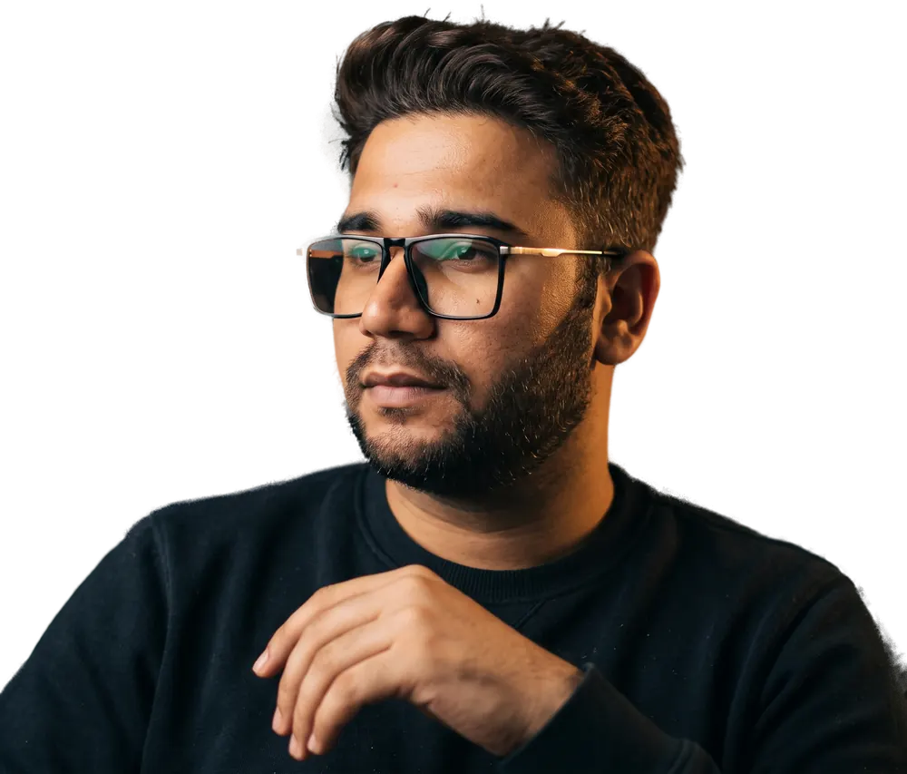

About · Kuala Lumpur
From job sites
to AI systems.
I'm a mechanical engineer who has worked on Malaysian job sites since September 2018: QA/QC on commercial builds, the Tun Razak Exchange, then rope-access operations on KL towers. Today I run Virin Digital and Vinayak Tech, and bring the same inspection habits to AI workflows, websites and documentaries.
- Since 2018 based in Kuala Lumpur
- 0 LTI rope access, 12+ months
- 4 languages English, Malay, Hindi, Punjabi

Where I've worked
Most recent first. The case studies have the detail.
-
2024–now
Rotol Group · Menara Maybank and KLCC towers
Project operations and site supervisor for rope-access façade work at 50+ storeys. I write the Safe Work Method Statements and run the daily HIRARC checks. Zero lost-time incidents over 12+ consecutive months.
-
2024–now
Virin Digital and Vinayak Tech
Founder. AI workflows and websites for businesses in Kuala Lumpur, and long-form documentaries on AI, energy and money, built from primary documents.
-
2021–24
WCT · Tun Razak Exchange
Site engineer and structural QA/QC on the 70-acre financial district. Inspection against drawings before pours, Non-Conformance Reports traced to root cause, and handoffs between civil, structural, architectural and MEP trades.
-
2018–21
Mitsutegap Sdn Bhd · Kuala Lumpur
QA/QC engineer on commercial and architectural builds. Defect inspection and sign-off between consultants and site crews, after moving to Malaysia in September 2018.
-
2016–18
UP Pumps · Uttar Pradesh
Assistant engineer diagnosing pump and pressure failures, while teaching mechanics to students.
-
2012–16
Sharda University
B.Tech in Mechanical Engineering.
How I work
Fail loudly, never silently
On a façade, the problem you can't see is the dangerous one. In software I give every step a time limit, a fallback and a log, so a failure shows up before a client finds it.
Build in a margin
Structures are designed for more than their expected load. I test workflows and sites against worse cases than the brief: slow phones, bad inputs and busy days.
Have a process that keeps breaking?
Tell me what happens today and what goes wrong. I reply within one working day.